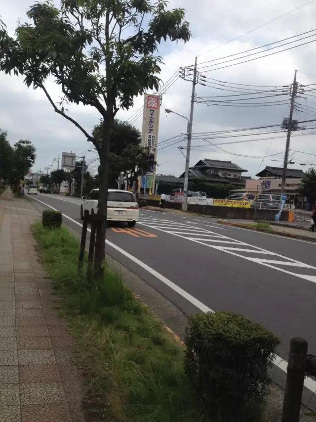
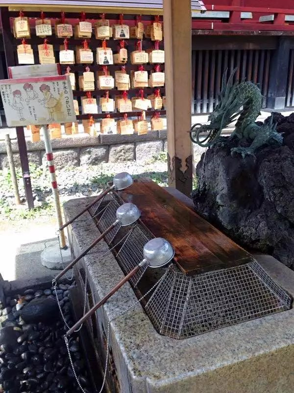
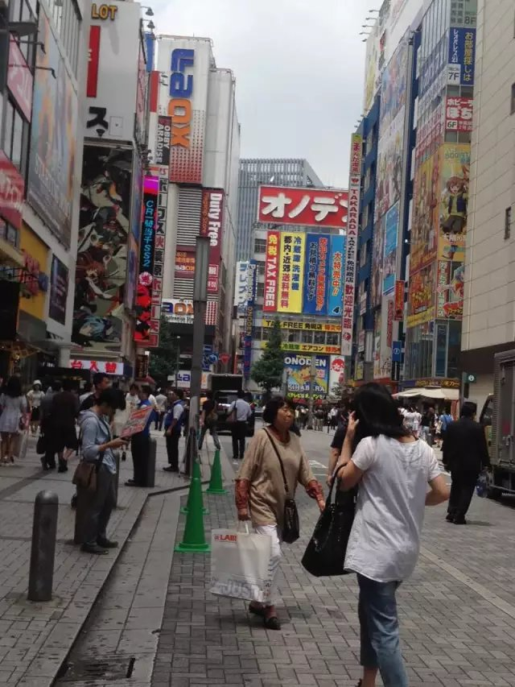
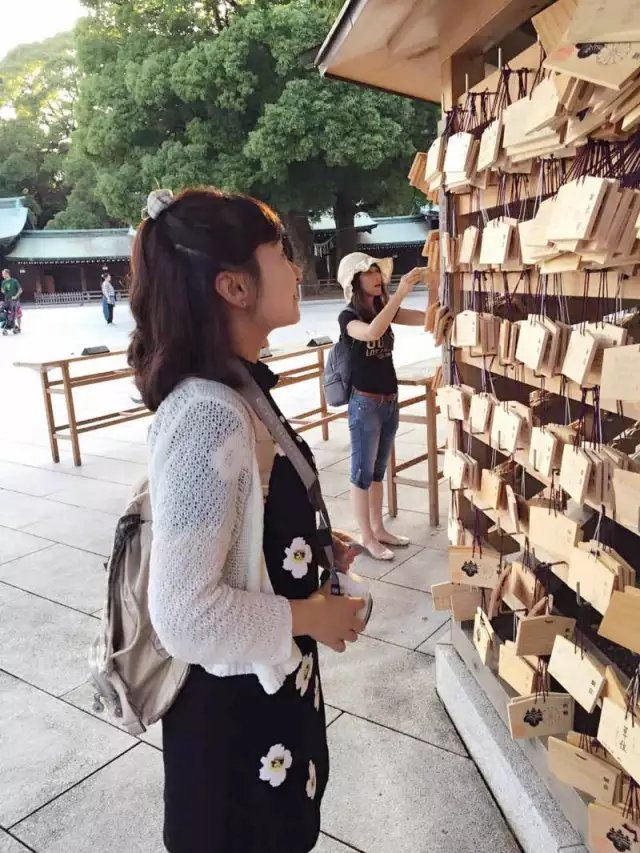
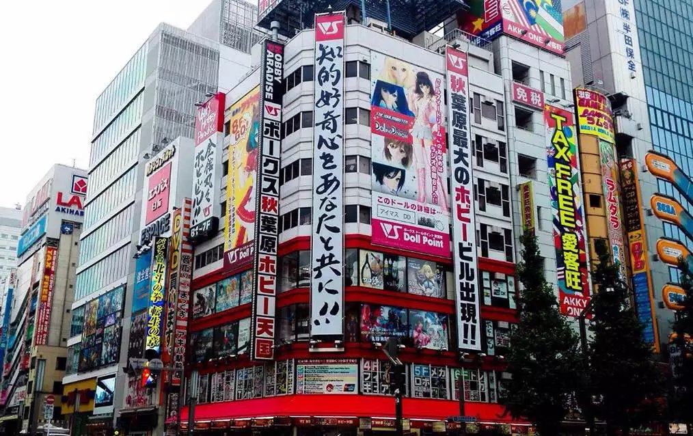

盼望着假期的到来，怀揣着忐忑的心情开始了为期两周的日本之旅……
来到日本，首先第一印象就是很干净，卫生。地上基本上没有垃圾。
另外就是空气很好，新鲜，感觉不到污染……
人们的穿着很时尚，大方。无论年轻人还是老年人都很干净，时髦，尤其是老年人
目测60多岁的奶奶们依然穿着小高跟，带着小礼帽，化着得体的妆容，给人一种精致的感觉……
在国内都说日本人对中国人有敌视，其实根本不是这样，看到日本人很热心，有礼貌，如果你问路的话，他们会把你一直领到你要去的地方。
最让人感到佩服的是在日本是车让人，刚开始不习惯，一直在等车过去，可是对方也在等你过，所以感到很吃惊。
过马路时大家都会等信号。无乱在哪里，听不到吵闹的声音，一直都很安静，安静的有点不太适用。

马路上几乎听不到说话的声音，所以在日本，我说话特意降低了分贝，做了一回安静的美少女……
在饮食上恐怕中国人很难适应，去日本的前几天感觉饭菜还比较好吃，吃了几顿最怀念的就是土豆丝和西红柿炒蛋，最后忍不了了就自己下厨，对于从没做过饭的我来说，味道还是不错哒。
在日本，没天都是各种吃，回国之后称也没有发胖，怪不得日本人都那么瘦。
去日本东京附近呆了半月，感觉值得去的地方有上野植物园，里边的动物园、美术馆，文化馆都不错，夜晚的东京塔、海贼王主题乐园、是比较有情调的地方，适合小情侣约会。
秋叶原、涩谷可以见到形形色色的coser，适合小青年high……
苍老师，怎么没在Tokyo看到你呢？